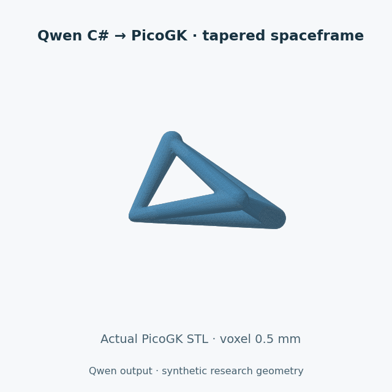

Selected personal software projects
Software I build
Security, compilers, trading research, documents and geometry. Five projects I build, with the interfaces, diagrams and generated results behind them.
01 / SELECTED WORK
ALBATOR
macOS security

A practical security toolkit for macOS, with a native Swift command-line tool and SwiftUI interface alongside Python and shell utilities. It checks machine settings, audits compliance profiles and produces reports.
I brought the checks, remediation scripts and reporting into a shared workflow, with YAML rules mapped to CIS and DISA STIG profiles. A dry-run mode lets an operator inspect proposed changes.
Swift · SwiftUI · Python · Shell · YAML
Packaged toolkit; support and checks are documented by macOS version.
02 / SELECTED WORK
cluster_compilot
AI + compiler engineering

An experimental optimisation loop: an AI model proposes a new arrangement of numerical code, a polyhedral checker tests schedule legality, and measured runs compare performance and outputs.
My implementation builds on the ComPilot research paper, with PolyBench workloads, ISL-based analysis, OpenMP code generation and MCP access for coding assistants. The model gets feedback from the checker and benchmarks before proposing another schedule.
Python · ISL · C / OpenMP · MCP
Research implementation. Performance depends on the workload and machine; the repository records benchmark conditions and limitations.
03 / SELECTED WORK
ELVIS
Paper-trading research

ELVIS / RESEARCH SYSTEM
Signals.
Decisions.
Replay.
- Generate a signal
- Check policy and risk
- Simulate execution
- Record and reconcile
PAPER TRADING ONLY
A Python research system for testing trading strategies with simulated orders and accounts. It brings together signal, policy, risk and execution contracts with durable journals for orders, fills and positions.
I am developing a smaller V2 architecture with PostgreSQL, replay and reconciliation tools. The operator preview supports offline database bootstrap and migration rehearsals while the existing paper runtime remains authoritative.
Python · PostgreSQL · Docker
Experimental, paper trading only. The V2 preview does not activate a live trading runtime and makes no profitability claim.
04 / SELECTED WORK
latex_cv
A CV built from source

A modular LaTeX workflow for generating my CV in French and English, with versions tailored to AI infrastructure, IT management and DevOps roles.
I separated the profile, experience, skills and certifications into reusable sources. A generation script selects the language and role, compiles the document and runs layout checks; GitHub Actions also builds the PDF on changes.
LaTeX · moderncv · Shell · Make · GitHub Actions
Personal document-generation toolkit with reusable modules and automated checks.
05 / SELECTED WORK
qwen-picogk
Models + geometry


An experimental multilingual planning system that adapts Qwen with MLX LoRA to propose bounded PicoGK parameter plans in English, French, German, Japanese and Chinese.
I develop the training data, adapters and evaluation workflow. Independent checks validate JSON, units and numeric intent before trusted C# recipes generate geometry. The repository also documents scan demonstrations and rejected experiments.
Python · MLX / LoRA · Qwen · C# · PicoGK
Experimental, with a small synthetic benchmark. Geometry demonstrations are not manufacturing-qualified parts.